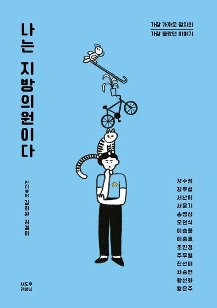
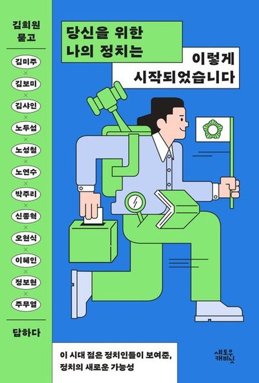

더넥스트제너레이션즈 / Work / 한 권의 정치
해온 일은 많은데 한 번도 정리된 적이 없습니다. 흩어진 기록을 하나의 이야기로 모으고 싶은 분.
축사만 이어지다 끝나는 행사가 아니라, 책이 중심에 서는 자리를 만들고 싶은 분.
지금까지를 매듭짓고 다음을 보여주어야 하는 시점. 그 전환을 한 권으로 증명하고 싶은 분.
재선 이상 지방의원과 총선 출마를 준비하는 분을 위한 과정입니다. 쌓인 것이 있어야 한 권이 됩니다.
책은 나왔고 사람도 모였는데, 행사가 끝나고 나면 책 이야기는 남지 않습니다. 몇 달 뒤 누군가 그 책을 기억하느냐고 물으면 대답이 어렵습니다.
이유는 하나입니다. 형식을 고른 적이 없기 때문입니다. 이미 있는 틀에 내용을 부었을 뿐입니다. 그 틀은 20년 전에 만들어진 것이고, 지금 유권자가 책과 행사를 소비하는 방식은 그때와 완전히 다릅니다.
같은 지표로 겨루면 아무도 구별되지 않습니다. 책도 똑같습니다.
책의 형태는 하나가 아닙니다. 어떤 형식이 맞는지는 그 사람의 언어와 성향에서 나옵니다. 말이 빠른 사람과 글이 단단한 사람은 다른 책을 내야 합니다.
책의 형식고르는 과정 자체가 기획입니다. 틀을 정해놓고 거기에 사람을 맞추지 않습니다.
대부분의 정치인은 선거를 몇 달 앞두고 급하게 책을 내고, 급하게 출판기념회를 엽니다. 그렇게 나온 책이 의례적인 출판, 출마를 알리기 위한 행사로 끝나는 데는 이유가 있습니다.
자료 정리, 인터뷰, 원고, 퇴고를 몇 주 안에 끝내야 합니다. 의정활동의 가치와 그 사람의 삶을 담기에는 턱없이 짧습니다.
선거를 앞두면 출판과 행사 일이 한꺼번에 몰립니다. 같은 틀, 같은 디자인, 같은 순서의 책이 쏟아지는 이유입니다.
급하게 낸 책은 자신의 정치를 설명하는 책이 아니라, 출마를 알리는 행사의 일부가 됩니다.
제대로 된 한 권은 기획부터 출판기념회까지 8~10개월이 걸립니다. 원하는 시점에서 거꾸로 세어 보면, 시작은 생각보다 빨라야 합니다.
의례적인 출판이 아니라 자신의 정치적 가치와 삶을 담은 한 권을 원한다면, 지금부터 준비해야 합니다.
나에게 맞는, 우리 지역에 맞는, 내 정치에 맞는 책은 시간이 만듭니다.
그 시작이 「한 장의 목차」입니다.
더넥스트제너레이션즈 대표
『나는 지방의원이다』(2022) · 『당신을 위한 나의 정치는 이렇게 시작되었습니다』(2025) 대표저자
『바꿔, 우리들이 살 세상이야 — 뉴 제너레이션을 위한 액션 툴킷』(2024) 공역
정치인의 기록을 다루려면 정치를 알아야 합니다. 정책이 어떻게 만들어지는지, 지역이 어떻게 움직이는지, 선거가 어떻게 돌아가는지.
책을 만들 줄 아는 사람은 많습니다. 정책과 지역과 정치를 함께 아는 사람은 드뭅니다.

나는 지방의원이다2022 · 대표저자
당신을 위한 나의 정치는두 권의 책을 기획하고 대표저자로 썼습니다. 26번의 심층 인터뷰를 하며, 같은 이야기를 어떻게 꺼내느냐에 따라 전혀 다른 책이 된다는 것을 확인했습니다.
기억에 남은 의원들에게는 공통점이 있었습니다. 숫자가 아니라 이야기가 있었습니다.
기획에서 끝나지 않습니다. 책이 나오고, 사람이 모이고, 그 자리가 남을 때까지 함께 갑니다.
다섯 단계에 앞서 「한 장의 목차」로 먼저 만납니다. 정의문 · 가목차 · 활동 및 기록 계획을 한 장에 정리하고, 그 한 장을 보고 출판 여부와 범위를 함께 정합니다. 계약 전 필수 과정이며, 그 결과물은 사전조사와 기획에 그대로 이어집니다. 「한 장의 목차」 보기 →
임기 전체의 의정활동 자료를 전수 검토합니다. 회의록, 조례, 보도자료, SNS. 여기에 심층 인터뷰와 주변 인터뷰를 더합니다. 본인은 사소하다고 넘긴 장면이 책의 중심이 되는 경우가 많습니다.
책의 형식과 행사의 형식을 여기서 고릅니다. 그리고 한 권을 관통하는 하나의 질문을 정합니다. 여기서 책의 급이 갈립니다. 목차를 확정하고, 샘플 원고 한 장을 써서 톤과 분량을 먼저 확인합니다.
구술 인터뷰로 초고를 만들고, 고쳐 쓰고, 편집합니다. 2주에 한 번 진도를 점검합니다. 정치인의 원고가 멈추는 지점은 대부분 재능이 아니라 일정입니다. 그 일정을 대신 관리합니다.
출판 경로를 정하고, 교정·교열과 표지·본문 디자인, 인쇄와 유통 등록까지 진행합니다. 표지와 판형도 관행을 따르지 않습니다. 2단계에서 정한 책의 성격을 끝까지 밀고 갑니다.
2단계에서 고른 형식으로 행사를 설계합니다. 진행 시나리오, 발언문, 초청 전략, 현장 운영까지. 끝나고 나서 사람들이 책 이야기를 하며 돌아가는 행사를 만듭니다.
어떤 책이 가능한지는 가지고 계신 자료와 하고 싶은 이야기를 봐야 알 수 있습니다. 첫 상담에는 비용이 들지 않습니다. 남겨주시면 연락드려 일정을 잡겠습니다.